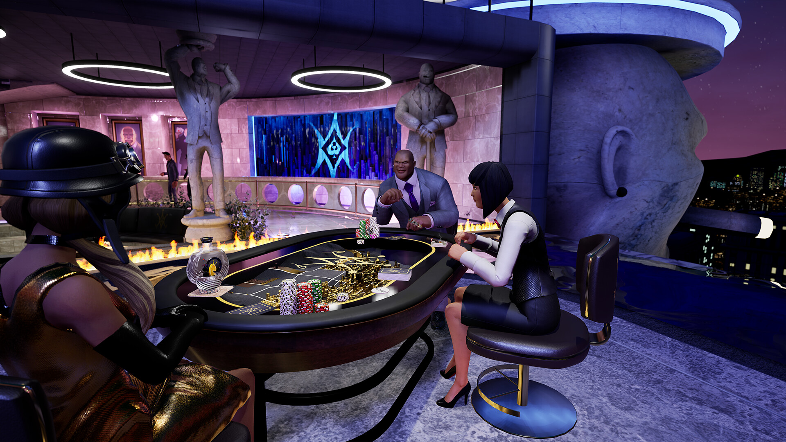

Prominence Poker
Near-black felt with a cool violet cast, gold line-art inlay, and a thick black padded rail over a wooden base.
#212025
hue 252° · sat 7% · light 14%
- Felt is essentially black — the colour comes from the lighting, not the cloth.
- Ornament lives in a single metallic accent (gold) on an otherwise dead-flat surface.
- A wide matte rail separates the felt from the room and grounds the table.